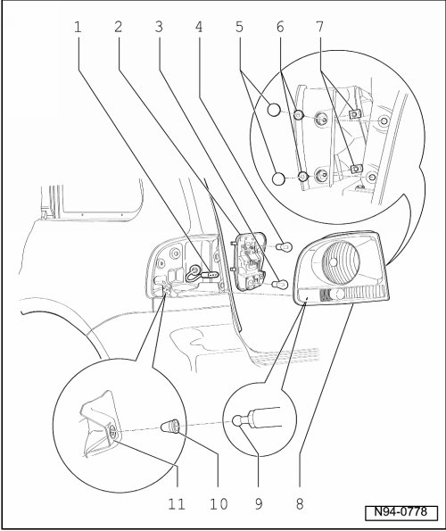

Side Panel Tail Lamp Assembly Overview
Side Panel Tail Lamp Assembly Overview

- Tightening specifications --> [ Tail Lamps ] Tail Lamps
1 - Connector
• For taillamp assembly in side panel
2 - Bulb holder
• Removing and installing --> [ Side Panel Tail Lamp Bulb Holder ] Tail Lamps
3 - Left Rear Turn Signal Lamp (M6) and Right Rear Turn Signal Lamp (M8)
• 12V / PY 21 W
• Checking --> [ Vehicle Electrical System Output Diagnostic Test Mode ] Initial Inspection and Diagnostic Overview
4 - Left Brake/Tail Lamp (M21) and Right Brake/Tail Lamp (M22)
• 12V / P 21 W / 4 W
• Checking --> [ Comfort System Central Control Module Output Diagnostic Test Mode ] Scan Tool Testing and Procedures
5 - Cap
6 - Screws
• For taillamp assembly in side panel
7 - Lock nut
8 - Housing
• Removing and installing --> [ Side Panel Tail Lamps ] Tail Lamps
• Gap dimensions --> [ Tail Lamp Gap Dimensions ] Tail Lamp Gap Dimensions
• The adjustable tail lamp assembly carrier is installed on retaining plate
• Adjustable tail lamp assembly carrier in side panel --> [ Adjustable Tail Lamp Assembly Carrier in Side Panel ] Tail Lamps
9 - Ball head
10 - Plastic clip nut
• Replace for every removal of the taillamp assembly
11 - Bracket
• Installing adjustable tail lamp assembly carrier --> [ Adjustable Tail Lamp Assembly Carrier in Side Panel ] Tail Lamps